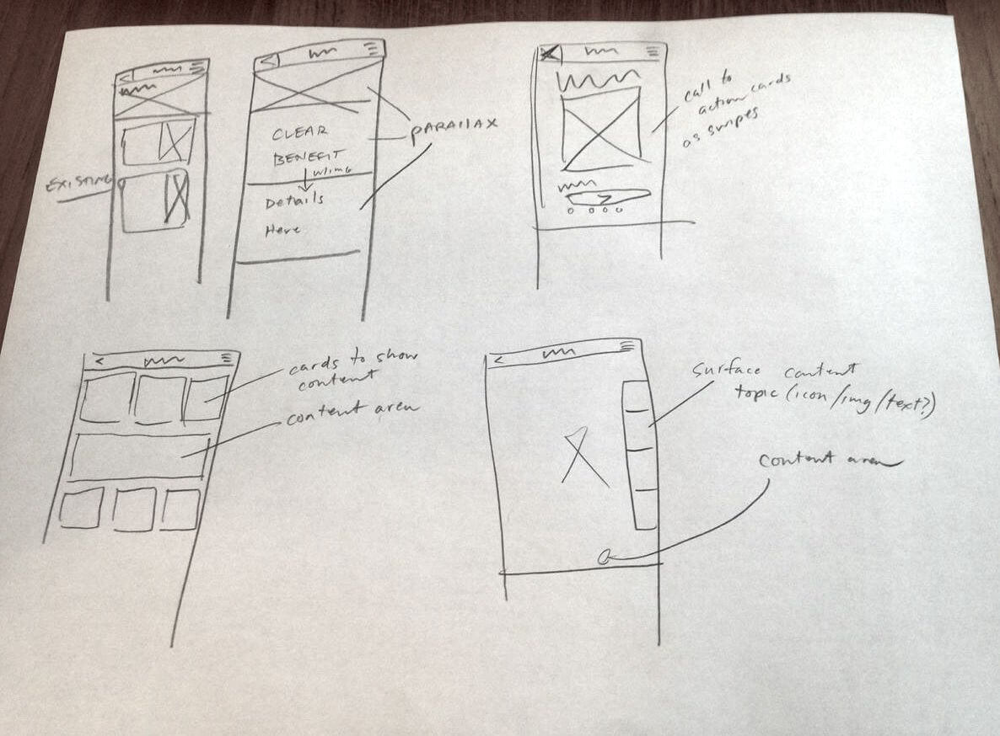
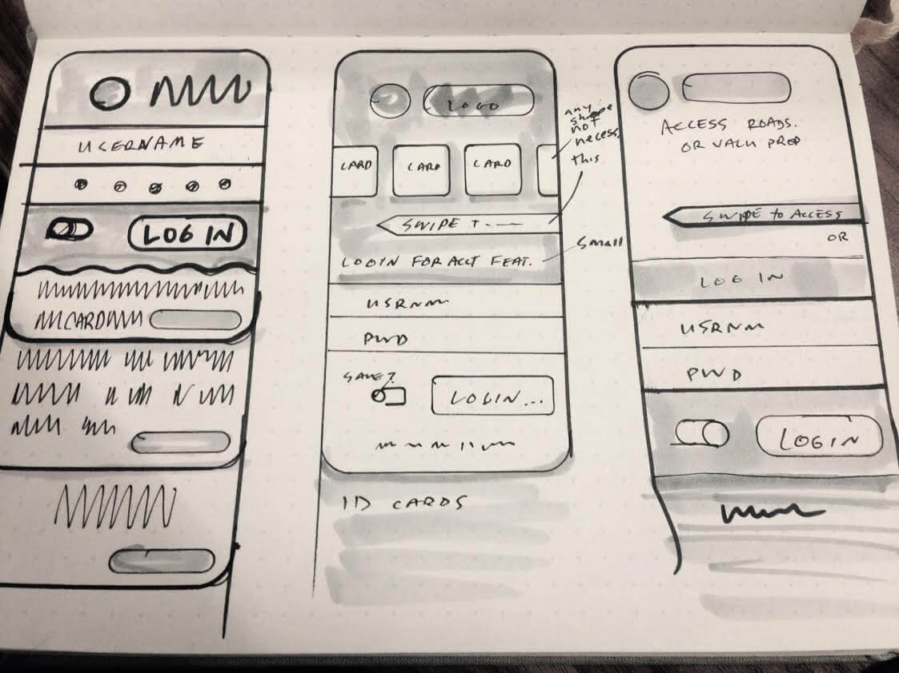

A large insurance company whose mobile app offers many free features, would like to surface these features for unauthenticated users to engage potential customers, build brand affinity, and encourage customers to purchase our premium product.
This project will be successful if engagement with free features in the app increase and app downloads increase.
People who drive and would find value in services like parking reminders, gas locator, and roadside assistance.
I worked with agency interaction designers, product stakeholders, and business/technology stakeholders to identify requirements and assess design feasibility.
Concepts for alternative home-screen designs had to be developed in one day, which is a tight deadline.
To arrive at these concepts I audited a number of applications, most of which required users to log in before accessing tools but some of which did not require a log in at all. A key differentiator would be to offer tools without logging in.
To better understand my options I listed each screen element or business requirement on a Post-It and arranged them in various configurations. From there I used an exercise called The Design Funnel, drawing 20 sketches in which I imagined how users could access tools without having to log in.

These rough sketches took about 40 minutes and included options like “Siri-integration” and “Today View Widget” integration.
From the rough sketches I narrowed the best concepts down and sketched them to present to the team. We identified the most feasible options and produced mid-fidelity wireframes to provide to our business and technology stakeholders.

The final sketches I presented (above) were the primary interaction patterns presented to business and while they were met with very favorable results, the technology team did not feel they would be able to implement the features within the project timeline.
I feel I produced some good sketches and with a more flexible development timeline the app home screens would have proven effective.